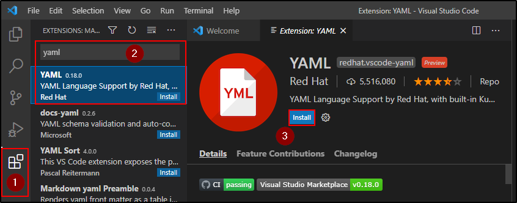

Tips & Tricks
Buona tip: Usare un IDE (Integrated Development Enviroment)
Ne esistono tanti, dalla Jetbrains alla Visual Studio.
Il problema è che alcuni necessitano di plugin oppure
non hanno integrato un meccanismo capace di dire
se vi sono errori nel file YAML.
Uno buono e gratis è Visual Studio Code.
Visual Studio Code vi è per Mac, Windows e Linux.
Inoltre, ha le estensioni necessarie che ci servono!
NB: Non valida i valori (tranne alcuni)
Se apriamo VSC, possiamo andare nella sezione "Estensioni",
cercare per YAML ed installare l'estensione.

Ora per settare YAML per Kubernetes, possiamo
seguire 2 strade:
1) Cliccare sulla rotella, "Extension settings", modifichiamo
lo schema file,


Edita il file, in modo da aggiungere l'estensione per Kubernetes:

Ora creiamo un nuovo file e salviamolo come YAML.
Possiamo usare "CTRL + Spacebar" per farci dare suggerimenti!

Gli errori mostrano cosa non va:

Se vuoi vedere la struttura ad albero, vedi a sinistra!